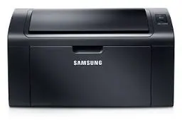

Thủ Thuật Máy In
Hướng dẫn sửa lỗi máy in các loại hp - canon - samsung - brother - ricoh .... Reset máy in brother , reset drum máy in brother .
Máy in không in được tại sao ?
XYZ
Hướng dẫn sửa lỗi máy in không in được
Máy In Bị Nhòe Mực Tại Sao ?
Hiện tượng máy in bị nhòe mực, nguyên nhân và cách khắc phục
Hướng Dẫn Cách Nạp Mực Máy In HP Laser M102
Lỗi Toner Empty Drum Life máy in Panasonic 1500
Hướng Dẫn Sửa Lỗi Máy In Không In Được
February 25, 2015 Leave a comment
Canon
Hướng Dẫn Cách Reset Máy In Samsung SCX 4300

- Máy in màu hp báo lỗi Er 11
- Lỗi máy in kéo giấy liên tục
- Sửa lỗi máy in hay bị kẹt giấy
- Sửa lỗi máy in màu không ra mực đều
- Hướng dẫn cách reset mực máy in Hp MFP M135w
- Tại sao máy in hp báo lỗi supply problem
HP
Sửa máy in
Hướng Dẫn Reset Mực Máy In Epson T50 T60 1394 1400
Máy In In Ra Toàn Giấy Trắng Tại Sao ?
Hướng Dẫn Sửa Lỗi Print spooler service not runing
LỖI MÁY IN BỊ KẸT GIẤY
Những Lỗi Cơ Bản Của Hộp Mực
Thứ tự trang in bị lỗi
hướng dẫn cài đặt in 2 mặt cho máy canon 3300
Hướng dẫn cách reser máy in Xeroc 3210 3220 đơn giản NHẤT
- Hướng Dẫn Sửa Lỗi Máy In Không In Được
- LỖI MÁY IN BỊ KẸT GIẤY
- Hướng Dẫn Sửa Lỗi Print spooler service not runing
- Lỗi Toner Empty Drum Life máy in Panasonic 1500
- Sửa Lỗi Máy IN Brother Nháy 4 Đèn Liên Tục
- Sửa Lỗi Máy In láy giấy Liên Tục
- Nạp mực máy in HP 107A
- Hướng dẫn clear đầu phun máy in epson
- Thay mực máy in hóa đơn TM U220
Xem thêm trong mục này
- Cách xử lý máy in Epson in không đúng màu - bảng in bị sọcMáy in phun màu epson sau khi sử dụng một thời gian thì có hiện tượng máy in ra không đúng màu, bản in bị sọc,…
- Hộp mực máy in 17a/18a/19a bị lem - tại saoTại sao Hộp mực máy in hp laser M102w/ M129/ M130 bị lem và cách khắc phục…
- Hướng Dẫn Cách Nạp Mực Máy In HP Laser m102Hướng Dẫn Cách Tháo Lắp Hợp Mực 17a, 18A, 19A Xin chào các bạn, có một số anh em kỹ thuật có hỏi tôi là " cách…
- Hướng dẫn cách reser máy in Xeroc 3210 3220 đơn giản NHẤTChip hộp mực máy in Xerox 3210 3220 cho in khoảng 1500 - 2500 trang A4, độ phủ mực 5%, chính vì vậy sau khi in…
- Hướng Dẫn Cách Reset Mực Máy In Samsung SCX 4300 Hiệu QuảHướng Dẫn Reset Máy In Samsung SCX 4300 Hiệu Quả 100% Máy in samsung SCX 4300 báo lỗi "toner empty replace ton…
- Hướng Dẫn Cách Thay Ruy Băng Máy In Hóa Đơn Epson LQ 300…Cách Thay Mực in Cho Máy In Kim EpSon LQ 300+/ LQ 310/ LQ 2190 ... Bơm mực máy in tận nơi Thay mực máy in hóa …
- Hướng dẫn cài đặt điện thoại với máy in wifiHướng dẫn cách kết nối điện thoại với máy in wifi Công nghệ in ấn ngày càng phát triển, cho ra các dòng máy in…
- hướng dẫn cài đặt in 2 mặt cho máy canon 3300Một số dòng máy in có chức năng in 2 mặt, chức năng này sử dụng khá phổ biến tuy nhiên có một số anh chị em là…
- Hướng dẫn nạp mực máy in HP LaserJet Managed MFP E82550DNCông ty Tin Học Hi-Tech xin chia sẻ cách bơm mực máy photo Hp Laserjet Managed MFP E82550DN. cách thay chíp mự…
- Hướng dẫn reset chip may in hp MFP 135w - Đơn GiảnCách Reset máy in Hp MFP 135w sử dụng hộp mực 107A Trung tâm mựcin hitech chuyên cung cấp linh kiện mực in máy…
- Hướng dẫn Reset Drum máy in Brother DCP L2520D L2701DW D…Hướng dẫn reset drum máy in Brother DCP L2520D MFC - L2701DW…
- Hướng dẫn reset drum máy in brother HL L2321D : 100% Thà…Hướng Dẫn Cách Reset Drum máy in Brother HL L 2321D Tại sao máy in brother HL L2321D báo lỗi đèn drum ? Nhà sả…
- Hướng dẫn reset máy in brother HL L5100DN ! Đơn GiảnHướng dẫn cách reset mực máy in Brother L5100DN nhanh nhất! Đặt thù của máy in Brother : từ tất cả các dòng má…
- Hướng Dẫn Reset Máy In Phun Canon Toàn TậpHướng dẫn Reset máy in Canon IX 6560 - Reset Máy In Canon IX 6770 Với một số dòng máy in phun canon như: máy i…
- Hướng dẫn reset mực máy in brother L3551 CDW - Chuẩn NhấtCách Reset Hộp Mực Máy In Brother L3551 CDW Máy in màu Brother L3551 CDW có 3 màu xanh - đỏ - vàng - đen, sau …
- Hướng dẫn sửa lỗi máy in kéo giấy liên tục Đơn Giản NhấtSửa lỗi máy in kéo giấy liên tục - Láy cùng lúc nhiều tờ giấy Lỗi máy in kéo giấy liên tục nguyên nhân là do b…
- Hướng Dẫn Sửa Lỗi Máy In Không In ĐượcHướng Dẫn Khắc Phục - Sửa Lỗi Máy in Không In Được Nói đến in ấn thì máy in là một thiết bị không thê…
- Hướng dẫn sửa lỗi máy in màu Hp báo lỗi Er 11 Đơn Giản N…Hướng dẫn cách sửa lỗi máy in màu HP báo lỗi Er 11 Máy in Hp báo lỗi er 11 Ngày 21/11/2020 Hãng HP đã ra phiên…
- Hướng Dẫn Sửa Lỗi Print spooler service not runingHướng Dẫn Sửa Lỗi Print Spooler Sevice Not Runing Print spooler là một dịch vụ hỗ trợ cho quá trình in ấn, vì …
- Hướng dẫn tự bơm mực máy in brother : Dễ Làm NhấtHướng dẫn Cách Tự Nạp Mực Máy IN Brother Giới thiệu về máy in brother: Máy in brother được sản xuất bởi hãng b…
- LỖI MÁY IN BỊ KẸT GIẤYHƯỚNG DẪN KHẮC PHỤC LỖI MÁY IN BỊ KẸT GIẤY Kẹt giấy là lỗi rất phổ biến mà rất nhiều máy in gặp phải. Tuy nhiê…
- Lỗi Toner Empty Drum Life máy in Panasonic 1500HƯỚNG DẪN RESET MÁY IN PANASONIC KX - MB 1500, 1510, 1520, 1530 ...…
- Máy In Bị Nhòe Mực Tại SaoNguyên Nhân Và Cách Khắc Phục Máy In Bị Nhòe Hoặc Lem Mực Máy in sau khi sử dụng một thời gian thì có hiện tượ…
- Máy In In Ra Toàn Giấy Trắng Tại SaoHướng dẫn sửa lỗi máy in - in ra toàn giấy trắng…
- Nạp mực máy in Hp laser 107A / 107W : Tận NơiCông ty Tin Học Hi-Tech chuyên: nạp mực máy in tận nơi TPHCM, Bơm mực in hp 107 tại nhà uy tín - tới nhanh - g…
- Nguyên nhân máy in màu không ra đều mực và cách sửa chữaMáy in màu là dòng máy in khá phổ biến và thịnh hành tại thị trường Việt Nam, với giá thành ngày càng rẽ, thiế…
- Những Lỗi Cơ Bản Của Hộp MựcCác Lỗi Cơ Bản Của Hộp Mực Máy In Laser Công ty bơm mực máy in tận nơi tphcm Khi sử dụng máy in thì có rất nhi…
- Phần mềm reset máy in Epson L310 : Miễn PhíTại sao ? máy in epson l310 nháy 2 đèn luân phiên Khi xảy ra lỗi hai đèn, máy in Epson L310 sẽ có các biểu hiệ…
- Phần Mềm Reset Máy In Hp 107aCông ty tin học Hi-Tech là đơn vị chuyên bơm mực in tận nơi, sửa máy in tại nhà giá rẻ. Nhận reset tất cả các …
- Sửa lỗi máy in Brother HL L2321D Nháy 4 đèn liên tục !!!Máy in Brother là thương hiệu máy in khá phổ biến tại Việt Nam, Đây là dòng máy in tương đối tốt, in nhanh, bả…
- Sửa lỗi máy in hay bị kẹt giấyCác lỗi máy in bị kẹt giấy thông thường. Hiện tượng máy in thường hay kẹt giấy, là lỗi thông thường mà người d…
- Sửa Máy In Hp 107AMáy in Hp 107A / Hp 107W là dòng máy in đơn năng trắng đen được ưa chuộn nhất trên thị trường hiện nay, với th…
- Tại Sao ? Máy In Màu Hp Báo Lỗi Supply ProblemSửa lỗi máy in màu Hp báo lỗi Supply Problem Việc máy in hp thường xuyên báo lỗi như : 10.1000 supply memory e…
- Tại sao máy in Brother bị mờ? Nguyên Nhân Và Tuyệt ChiêuCách sửa lỗi máy in brother, hộp mực in brother bị mờ…
- Thứ tự trang in bị lỗiHướng Dẫn Sửa Lỗi Thứ Tự Trang In Hướng Dẫn Sửa Lỗi Trang In Bị Ngược Hướng Dẫn Reset Máy In Phun Canon Toàn T…